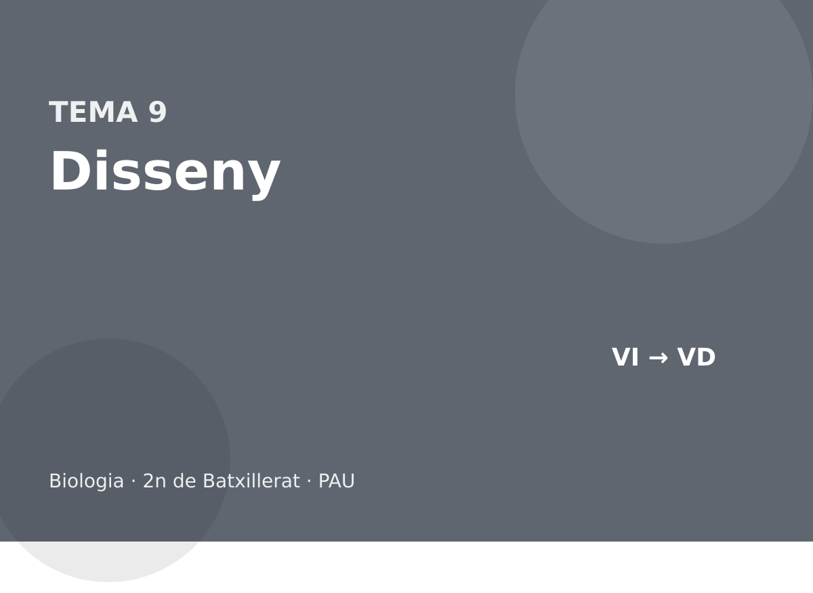

Disseny experimental

Hipòtesi, variables, controls, rèpliques i lectura de resultats, com a la PAU.
Què entra a la PAU
El disseny experimental és un bloc propi de la prova, no un apèndix. En qualsevol exercici contextualitzat us poden demanar la hipòtesi, quina és la variable independent i quina la dependent, quines variables s’han de controlar, què és el control, per què calen rèpliques i quina conclusió es pot treure de les dades. També cal llegir gràfics i taules, i detectar errades en un text o un esquema del nivell del curs.
No es demana un disseny de laboratori universitari. Es demana un disseny lògic i factible, amb el material que tindria un laboratori de batxillerat o, simplement, amb el raonament. No cal haver fet l’experiment de l’enunciat.
9.1 El mètode en una pregunta de PAU
Una hipòtesi és una resposta provisional, formulada de manera que les dades la puguin contradir. «La temperatura afecta l’enzim» és massa vaga. «Per damunt de 60 °C la velocitat d’aquest enzim cau perquè es desnaturalitza» es pot posar a prova.
La conclusió ha de sortir de les dades de l’enunciat, no del que recordaríeu en abstracte. Si el gràfic no ensenya diferència entre dos grups, no es pot concloure que n’hi ha. Si la mostra és de tres pous, no es pot parlar d’una llei general: es pot dir que, en aquestes condicions, s’observa allò. Una millora estadística típica és augmentar el nombre de rèpliques o de subjectes, no «fer-ho més precís» sense dir com.
Uns investigadors comparen l’RNA de tres espècies i un sol individu de cadascuna. Proposeu una millora perquè el resultat sigui més sòlid.
Analitzar diversos individus de cada espècie (rèpliques biològiques). Amb un sol exemplar no es pot separar la diferència entre espècies de la particularitat d’aquell individu.
Una pregunta de disseny a la PAU no demana un treball de laboratori real. Demana que el text tingui una hipòtesi que es pugui falsar, una variable independent (la que es canvia), una de dependent (la que es mesura), les altres controlades, un control i prou rèpliques. La hipòtesi no és el tema: «vull estudiar els enzims» no és una hipòtesi. «A pH 2 aquest enzim anirà més ràpid que a pH 7» sí que ho és, perquè pot ser falsa.
Un alumne diu: «les plantes creixen millor amb música». Reformuleu-ho com una hipòtesi operativa i digueu quina és la variable dependent.
Hipòtesi: les plantes d’aquesta espècie, a igualtat de llum, aigua i sòl, fan més biomassa en trenta dies si sona música que si no. La variable dependent és la biomassa (o l’alçada, si és el que es mesura), no «créixer millor», que no és una mesura. La independent és la presència de música. Sense igualar la resta, no es pot atribuir la diferència a la música.
Per què «demostrar que la hipòtesi és certa» no és un objectiu ben escrit?
Perquè un experiment la pot rebutjar o no rebutjar. Si es dissenya per confirmar-la, es tendeix a ignorar el control que la faria caure. L’objectiu és posar-la a prova. Una hipòtesi que sobreviu a un bon control guanya suport; no queda demostrada per sempre.
Reformuleu «els adobs són bons» en una hipòtesi que es pugui rebutjar, amb una variable independent i una de dependent.
Les plantes de blat d’aquesta varietat, amb la mateixa aigua i la mateixa llum, tenen més massa seca als trenta dies si el sòl rep 2 g d’aquest adob que si no en rep. Independent: la dosi d’adob. Dependent: la massa seca. «Bons» no és mesurable. Si la massa no puja, la hipòtesi cau. Això és el que la fa vàlida.
Un experiment es dissenya per «demostrar» la hipòtesi. Quin biaix hi entra, i com s’escriu millor l’objectiu?
El biaix de quedar-se amb les dades que encaixen i de no posar el control que la faria caure. L’objectiu s’escriu com a posar a prova, no com a confirmar. Una hipòtesi que sobreviu és més forta; no queda demostrada per un sol disseny.
9.2 Variables, control i rèpliques
La variable independent és la que l’experimentador canvia. La dependent és la que es mesura. Les controlades es mantenen iguals perquè, si no, no se sabria quina ha causat el canvi. El control és el grup o el tub que rep el mateix tractament excepte la variable que es vol provar.

Es vol saber si un inhibidor redueix l’activitat d’un enzim. Es preparen tubs amb enzim, substrat i inhibidor, a 37 °C, i es mesura el producte als 5 minuts. Quina és la variable independent, quina la dependent i què hi falta?
Independent: la presència (o la concentració) d’inhibidor. Dependent: la quantitat de producte. Hi falta un control sense inhibidor, amb la resta igual, i convé repetir cada condició (rèpliques). Si només es canvia també la temperatura, ja no se sap què ha actuat.
Una rèplica és repetir la mesura en les mateixes condicions. Una sola observació pot ser un error de pipeta. Tres pous iguals no són tres experiments diferents si surten del mateix tub: són rèpliques tècniques. Millor, si es pot, repetir el muntatge sencer.
Un grup mesura la velocitat d’un enzim a pH 7 i a pH 4, però al pH 4 també ha canviat la temperatura. Es pot concloure que el pH és la causa?
No. S’han canviat dues variables. Cal repetir-ho amb la temperatura fixa i un control a pH 7, amb rèpliques.
El control rep el mateix tractament menys la variable que es vol provar. En un experiment d’un fàrmac, el control és el dissolvent sense fàrmac, no «no fer res» si el dissolvent també podria tenir efecte. Les rèpliques són individus o cultius independents, no tres mesures del mateix tub. Mesurar tres vegades el mateix tub estima l’error de la pipeta; no estima la variació biològica. La mida de la mostra és el nombre d’unitats independents.
| Peça | Exemple bo, enzim i pH | Exemple que invalida |
|---|---|---|
| Independent | el pH del tub | canviar alhora pH i temperatura |
| Dependent | µmol de producte per minut | «si va bé» |
| Control | el pH òptim conegut, o sense enzim | no tenir cap tub de referència |
| Rèpliques | cinc tubs per pH, preparats a part | llegir cinc vegades el mateix tub |
Es vol saber si un adob augmenta la massa de blat. Es planten 30 testos amb adob al sol i 30 sense adob a l’ombra. On és l’error, encara que hi hagi moltes rèpliques?
S’han canviat dues variables: l’adob i la llum. Una diferència no es pot atribuir. Cal el mateix lloc, la mateixa aigua i la mateixa varietat, i només ha de canviar l’adob. Les 30 rèpliques estan ben pensades com a nombre; estan mal aparellades. El control ha de ser idèntic menys en la variable independent.
Un control negatiu no dona senyal i el positiu sí. Per què tots dos fan falta en una PCR de diagnòstic?
El negatiu (sense DNA motlle) diu si els reactius estan contaminats: si amplifica, els positius de les mostres no es poden creure. El positiu (un DNA que se sap que funciona) diu si la reacció és capaç d’amplificar: si no ho fa, un negatiu de la mostra pot ser un error tècnic i no una absència real. Amb un de sol no es distingeix contaminació de fallada.
Es proven tres concentracions d’un enzim i un tub sense enzim, cinc tubs de cada, preparats per separat. Identifiqueu el control, la variable independent, la dependent que falta decidir i per què cinc lectures del mateix tub no substitueixen els cinc tubs.
El control és el tub sense enzim: si hi apareix producte, el mètode està contaminat. La independent és la concentració. La dependent ha de ser una mesura, per exemple µmol de producte per minut; sense dir-la, el disseny no està tancat. Cinc lectures del mateix tub repeteixen l’error de mesura. Cinc tubs estimen la variació real de la preparació.
El control d’un fàrmac dissolt en etanol és aigua, no etanol. Per què el control està mal triat?
Perquè l’etanol sol pot tenir efecte. Si el grup del fàrmac difereix del grup aigua, no se sap si la causa és el fàrmac o el dissolvent. El control correcte és el dissolvent sol, a la mateixa concentració. Tot el que no és la variable independent s’ha d’igualar, inclòs el vehicle.
9.3 Gràfics, taules i errades
En un gràfic, l’eix horitzontal sol ser la variable independent i el vertical la dependent. Les unitats hi han de ser. Una taula es llegeix per columnes: no es compara un número d’una fila amb el d’una altra columna sense mirar el títol. Si us demanen dues conclusions, han de ser dues idees diferents, totes dues visibles a les dades.
Detectar errades és un tipus de pregunta habitual. El mètode és marcar la paraula que no encaixa amb el tema i dir la correcció, no reescriure tot el paràgraf. Exemples que ja han sortit al dossier i que tornen: confondre histamina i anticòs, posar la glucòlisi al mitocondri, dir que la fermentació dona 38 ATP, tractar un prió com un virus, o dibuixar l’anafase de la mitosi com si se separessin cromosomes homòlegs.
Cada errada es respon amb la peça correcta del curs, en una frase. Si l’enunciat en demana dues, no n’hi poseu tres ni una de sola.
«Els anticossos els fabriquen els limfòcits T citotòxics i són lípids.» Dues errades.
Els fabriquen les cèl·lules plasmàtiques, que venen dels limfòcits B. Són proteïnes, no lípids.
Quan el gràfic té dos eixos, escriviu la conclusió amb les unitats que s’hi veuen. Si la corba puja i després cau, no digueu que «sempre puja». Si compareu dues espècies amb un sol individu, la conclusió màxima és que aquells dos exemplars difereixen, no que les espècies senceres ho facin. La millora és afegir rèpliques biològiques.
Un text diu que la glucòlisi ocorre a la matriu mitocondrial i rendeix 38 ATP. Quines errades hi ha?
La glucòlisi és al citosol i el balanç net són 2 ATP i 2 NADH. Els 30–32 ATP (o 36–38 en el conveni escolar) són el total de la respiració aeròbica completa, no el de la glucòlisi.
En un gràfic es llegeix què hi ha a cada eix, unitats incloses, abans de dir si «puja». Una recta que puja és una relació positiva en el tram representat, no una llei per a sempre. Una campana (velocitat d’un enzim contra temperatura, o contra pH) té un òptim: a l’esquerra limita la cinètica i a la dreta la desnaturalització o la càrrega del centre actiu. No es descriu com «a més temperatura, més velocitat».
La mitjana sense dispersió no diu si dues condicions es separen. Si les barres d’error es solapen del tot, la diferència que es veu a les mitjanes pot ser soroll. A batxillerat no es demana un test estadístic; es demana no concloure amb un sol individu ni ignorar els eixos.
Un gràfic de velocitat enzimàtica contra concentració de substrat arriba a un altiplà. Un segon gràfic, amb un fàrmac, arriba al mateix altiplà més a la dreta. Quina conclusió és correcta, i quina seria exagerada?
Correcta: el fàrmac és compatible amb una inhibició competitiva, perquè la Vmax es manté i cal més substrat per acostar-s’hi. Exagerada: «el fàrmac desnaturalitza l’enzim» o «l’enzim ja no funciona». Si desnaturalitzés, l’altiplà baixaria. També seria exagerat donar el valor numèric de la Km si l’eix no té escala llegible.
Una taula dona el nombre de bacteris a 20 °C i a 40 °C, una sola placa a cada temperatura. Es pot concloure que l’òptim és 40 °C?
No. Dos punts no fan un òptim: a 50 °C podria anar pitjor, i una sola placa no separa l’efecte de la temperatura d’un error de sembra. Cal un rang de temperatures i rèpliques. Com a màxim es pot dir que, en aquest parell de plaques, a 40 °C se n’han comptat més.
Un gràfic de producte contra temps és lineal els primers deu minuts i després s’aplana. Un company diu que l’enzim s’ha desnaturalitzat. Quina lectura alternativa és la primera que cal considerar?
Que el substrat s’ha acabat o que el producte inhibeix. La desnaturalització no és la hipòtesi per defecte d’un altiplà en el temps: ho seria si la temperatura hagués pujat o el pH hagués canviat. Cal mirar si, en afegir més substrat, la recta es recupera. Si es recupera, l’enzim era actiu i li faltava substrat.
Dues mitjanes difereixen i les barres d’error es solapen gairebé del tot. Quina conclusió és excessiva?
Dir que les condicions són diferents. Amb aquest solapament, la diferència de mitjanes pot ser soroll. A batxillerat no es demana el test, es demana no concloure. La millora és més rèpliques, no una frase més forta. Si les barres no es toquen, la diferència es pot defensar amb més tranquil·litat, i encara així com a resultat d’aquella mostra.
Un gràfic mostra la velocitat d’un enzim a cinc pH: 2, 4, 6, 8 i 10. Els valors són 10, 40, 90, 30 i 5. On és l’òptim, i per què no es diu que «com més alt és el pH, més lenta és la reacció»?
L’òptim, d’aquests punts, és pH 6. La frase és falsa perquè de 2 a 6 la velocitat puja. Només baixa a partir de l’òptim. Una frase vàlida és: hi ha un òptim a pH 6 i la velocitat cau a banda i banda. Extrapol·lar a pH 12 no es pot fer amb aquestes dades.
Resum
| Peça | Pregunta que us faran |
|---|---|
| Hipòtesi | què esperen trobar, i es pot contradir? |
| Independent | què han canviat ells? |
| Dependent | què han mesurat? |
| Control | què és igual, tret d’aquesta variable? |
| Rèpliques | per què un sol resultat no basta? |
| Conclusió | què es veu a les dades, i què no es pot dir? |
Errors típics a la PAU
- Intercanviar la variable independent i la dependent.
- Proposar un control que canvia dues coses alhora.
- Concloure més del que el gràfic ensenya.
- Respondre «cal més precisió» sense dir quina rèplica o quin control falta.
- En una pregunta d’errades, corregir-ne una de diferent de la que hi ha al text.
Glossari
- Hipòtesi
- Resposta provisional que les dades poden contradir.
- Variable independent
- La que es canvia a propòsit.
- Variable dependent
- La que es mesura.
- Control
- Grup o tub igual en tot, excepte en la variable que es vol provar.
- Rèplica
- Repetició de la mateixa condició, per no fiar-se d’una sola mesura.
- Conclusió
- El que les dades permeten afirmar, i no més.
Autoavaluació
Es vol estudiar l’efecte del pH sobre l’activitat d’un enzim. Quina és la variable dependent i quina la independent? Definiu-les amb el que es canvia i el que es mesura, no amb el nom del tema.
Resposta
La variable independent és el pH, perquè és el que l’experimentador fixa a valors diferents. La variable dependent és l’activitat de l’enzim, mesurada per exemple com a velocitat inicial o com a quantitat de producte format per unitat de temps. «Si funciona bé» no és una variable dependent, perquè no és una mesura. La resta de condicions —temperatura, concentració d’enzim, concentració de substrat, temps— s’han de mantenir constants. Si es canviés alhora el pH i la temperatura, una diferència d’activitat no es podria atribuir al pH.
Un alumne prepara un sol tub amb enzim, substrat i un possible inhibidor, i observa que es forma poc producte. Per què aquest resultat no demostra que l’inhibidor redueixi l’activitat?
Resposta
Perquè no hi ha amb què comparar. Falta un control amb el mateix enzim, el mateix substrat i el mateix dissolvent, però sense l’inhibidor. Sense aquest control, el poc producte podria ser el ritme normal de l’enzim en aquelles condicions. A més, un sol tub no és una rèplica: la mesura pot ser un error de pipeteig. Calen diversos tubs preparats per separat en cada condició. Llegir cinc vegades el mateix tub només repeteix l’error de lectura; no estima la variació de la preparació.
Un gràfic compara tres espècies amb un sol individu de cadascuna. Quina millora del disseny proposeu, i quina conclusió és excessiva amb les dades actuals?
Resposta
Cal mesurar diversos individus de cada espècie, en les mateixes condicions, per separar la diferència entre espècies de la particularitat d’un exemplar. Amb un sol individu, el màxim que es pot dir és que aquells tres exemplars difereixen en la variable mesurada. Concloure que les espècies senceres difereixen és excessiu: l’individu mesurat podria ser extrem dins la seva espècie. Les rèpliques han de ser biològiques, individus o cultius independents, no tres lectures del mateix organisme.
Un text afirma que «el prió és un virus de RNA». Identifiqueu l’errada i escriviu la correcció, comparant el prió amb un virus pel que fa al material que els constitueix.
Resposta
L’errada és doble: un prió no és un virus i no conté RNA. És una proteïna amb un plegament anormal, que indueix el mateix plegament en la proteïna sana del mateix tipus, i no porta àcid nucleic. Un virus, en canvi, té sempre àcid nucleic —DNA o RNA— dins una càpsida. Un agent que es destrueix en desnaturalitzar proteïnes i que resisteix un tractament que trenca àcids nucleics encaixa amb un prió, no amb un virus ni amb un viroide. El viroide sí que és RNA, però nu i sense càpsida, i tampoc no és un prió.
Biologia · 2n de Batxillerat · dossier de teoria